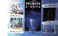
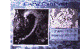

Weather Phenomena Wallcharts (size 84 cm x 59 cm)
Suitable for 7 -11 year olds, this series of 5 large colourful wallcharts depicts some of the most fascinating weather phenomena. Photographs and drawings illustrate a number of simple facts about the different types of weather. Each wallchart is accompanied by a Teachers' leaflet giving useful background information about the phenomena. The wallcharts are available singly or as a set of 5:
The Weather Phenomena Wallcharts are priced at 3.50 (pounds sterling) each or 15.00 (pounds sterling) for a set containing all 5 (post and packaging within the European Union included in the price).
Satellite Posters (size 59 cm x 42 cm)
A set of 4 satellite posters, each showing a large black and white satellite picture taken from a polar-orbiting satellite plus the relevant 1200 GMT synoptic chart, showing isobars, fronts, depressions and anticyclones. Non-technical text also helps teachers and pupils to focus on areas of particular interest. The 4 pictures, chosen for their excellent representation of the particular weather conditions, show:
The satellite posters are priced at 10.00 (pounds sterling) for the set (this includes post and packaging within the European Union).
Ordering
To order, please send your name and address with details of the poster(s) required and a cheque/Postal Order made payable to 'Public Sub Acnt HMG4712' to :
![[Left]](../../pics/left.gif)
![[Up]](../../pics/up.gif)
![[Right]](../../pics/right.gif)
![[Home]](../../pics/home.gif)

{kind=link}
{kind=link}
{kind=link}
{kind=link}